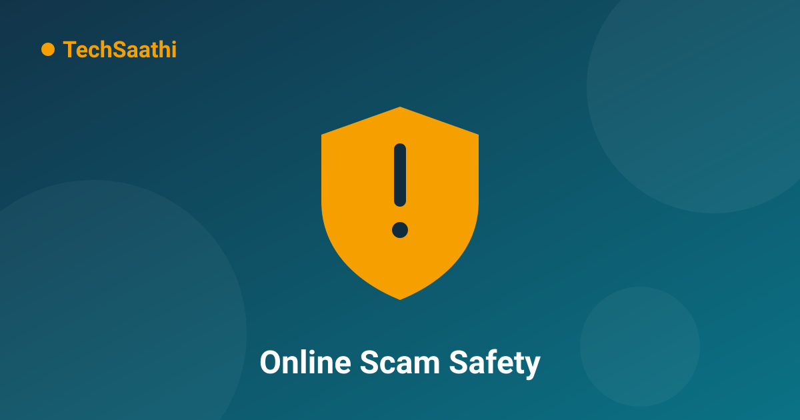

The Complete Guide to Staying Safe From Online Scams — Spotting OTP, UPI and KYC Fraud

Every day brings another fraud story — someone's bank account drained, someone tricked by a fake lottery, someone who shared their screen and lost their savings. The scary part isn't that scams exist; it's that most of them follow the exact same patterns — and once you can recognize those patterns, you can avoid 99% of them. Read this guide, and make sure the older members of your family read it too.
The Most Common Scams and How to Spot Them
1. The Fake KYC Scam
You get a call: "Your SIM/Aadhaar/bank KYC is expiring. If you don't renew it now, your number will be deactivated and your account frozen." Panicking, you hand over an OTP, card details, or screen access.
The truth: No bank or telecom company ever completes KYC over a phone call. KYC always happens at an official branch, in the official app, or at an authorized center. If you get such a call, hang up — without listening further.
2. The UPI "Receive Money" Scam
The newest and most dangerous pattern. At a small shop or in an online deal, the scammer sends you a UPI request and says: "Sir, to receive the payment the app will ask for your UPI PIN — please enter it."
3. The Screen Sharing Scam
"We'll fix your phone's settings, just install this app and share your screen." Using remote-control apps like AnyDesk or TeamViewer Quick Support, the scammer gains full control of your phone — opens your banking app, watches your OTP arrive, and transfers your money. Never install an app or share your screen because a stranger asked you to.
4. The Fake Lottery / Prize Scam
"Congratulations! Your number won the lucky draw — you've won 5 lakh, just send a ₹500 processing fee." Or the KBC-style "you've won a lottery". Remember: real prizes never ask for money upfront, and you cannot win a competition you never entered.
5. Fake Delivery, Job and Customer-Care Scams
- Fake parcel call: "Your courier is stuck, call this number" — the number carries premium charges or harvests your data
- Job scam: "Earn ₹3,000 daily from home" on Telegram/WhatsApp — they collect a registration fee and disappear
- Fake customer care: Searching "customer care number" on Google surfaces fake numbers — they make you install apps or reveal OTPs
The 7 Golden Rules That Stop 99% of Scams
- Never share an OTP with anyone — bank OTP or app OTP, an OTP is as good as a password. Real bank employees never need it.
- UPI PIN is only for sending money — never for receiving. This is the single most important rule.
- Refuse to be rushed — every scam is built on urgency: "Do it in 2 minutes or else..." If it truly matters, it will still matter in 10 minutes.
- Think before tapping links — don't open links that arrive by SMS/WhatsApp. For anything bank-related, open the official app or type the website yourself.
- Never install apps on someone's instruction — especially remote-control apps like AnyDesk.
- Guard your personal details — Aadhaar numbers, card numbers, CVV — never hand these out on a call or message.
- Teach your elders — older family members are the easiest targets. Make sure they read this article.
If You've Been Scammed, Do These 3 Things Immediately
- Call the helpline 1930 — the Government of India's cybercrime helpline. The sooner you call, the better the chances of freezing the money. The first 1-2 hours matter the most.
- Report at cybercrime.gov.in — file a complaint through "Report Other Cybercrime". Keep your transaction details handy.
- Call your bank immediately — ask them to block/freeze the account so no more money leaves.
Conclusion
Scammers keep inventing new stories, but their weapons never change — fear, greed and urgency. Stay alert to all three, never share OTPs or PINs, and whenever an "emergency" call arrives, hang up and verify through the official number yourself. Your vigilance is the best cybersecurity you own.
Frequently Asked Questions (FAQ)
I accidentally gave a scammer my OTP. What now?
Call 1930 immediately and have your bank block all transactions from the account. The faster you act, the better your chances of recovering the money. Also file a police complaint (FIR).
Is every bank call a scam?
No, not all calls are scams. But genuine bank staff will never ask for your OTP, PIN, CVV, or screen access. The moment any of those are requested, it's a scam. If in doubt, hang up and call the number printed on the back of your card.
How do fake customer-care numbers rank so high on Google?
Scammers run ads and build fake websites that rise to the top of search results. So never take a customer-care number from Google — take it from the official app, official website, or your bill/receipt.
This information can save someone's money — please share it with your family and friends. 🛡️